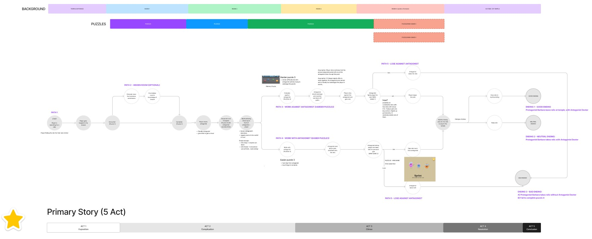
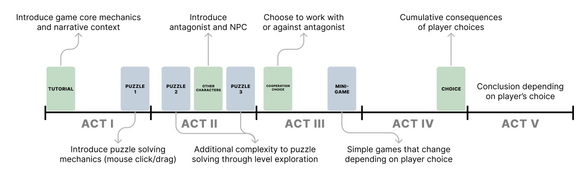
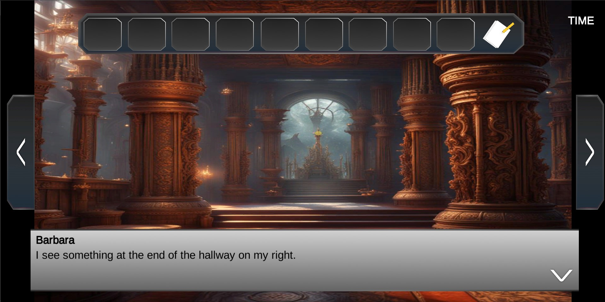
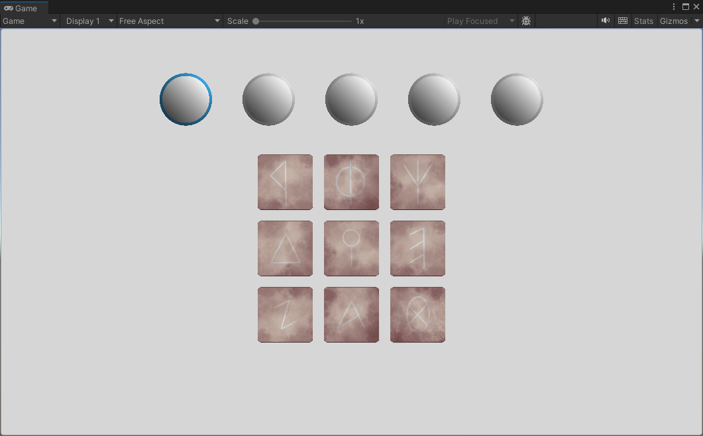
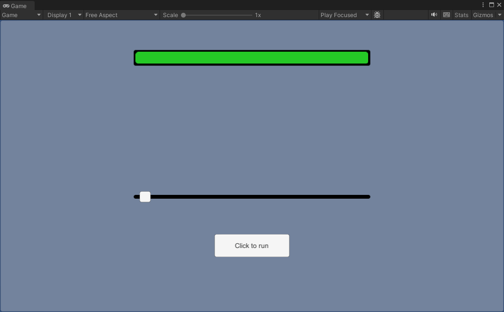

Fall Semester 2023
Group project
This is our second project in IAT312. The aim of this project was to explore storytelling elements in games. We were tasked with redesigning a previous project from the course, a mini escape game map made in Minecraft. Based on a video playthrough of the map, we were told to improve the story narrative and create a new game based on it. My team members included Janelle Hong (scriptwriter), Jimmy Lin (artist), and Kenny Zhang (lead programmer).
Project planning and ideation, support programming, UI design.
Unity, Figma
In our first meeting we brainstormed possible story ideas based around the theme of escaping from a dungeon. I used ChatGPT to create several brief initial concept ideas. As a group we chose one to move forward with, which was then expanded into a 5 act narrative.
We decided that a visual novel format would work well to help us highlight the storytelling elements of the game. Initially, we were thinking of using Renpy to create the game. However, we ended up settling on using Unity due to the short timeframe and flexibility.
I created some simple sprites to use as UI elements, mainly focusing on the textareas and inventory. Additionally, I also implemented some hints that appear every once in a while depending on which stage of the game the player is in.
The first mini-game I programmed was a simple Simon-Says memory game. Here, the player is presented with a grid of runes that will sequentially light up, the player will have to remember the sequence and click the runes in order. The order of the runes is selected randomly and stored in an array. Each stage will increase the number of runes required to pass.
I also helped program the initial tug-of-war at the climax of the story as the protagonist "fights" against the antagonist. This was a simple timer based mechanic where the player must click the button to mvoe the bar before the timer runs out. This was eventually reworked by Kenny to use the spacebar and implement physics to mimic the pulling of a tug-of-war.
Based on playtesting feedback, the tug-of-war narrative was quite long and players were getting tired during the dialogue. To help circumvent this, I added in a "shortcut" that will appear randomly and allow the player to cut to the end if they succeed in the mini-game.
We ended up with a visual novel game where the player must explore around different scenes, find clues, and solve puzzles to escape. Dialogue and character choices will affect the story and the player must pass the different challenges to survive.
I acted as more of a general support member throughout this project, assisting my teammates with various tasks. I found it quite fun moving between different types of tasks as there was never a dull moment. This also gave me a good holistic understanding of the entire project, as I focused on tying together loose ends and harmonising different parts of the game during our final sprint.